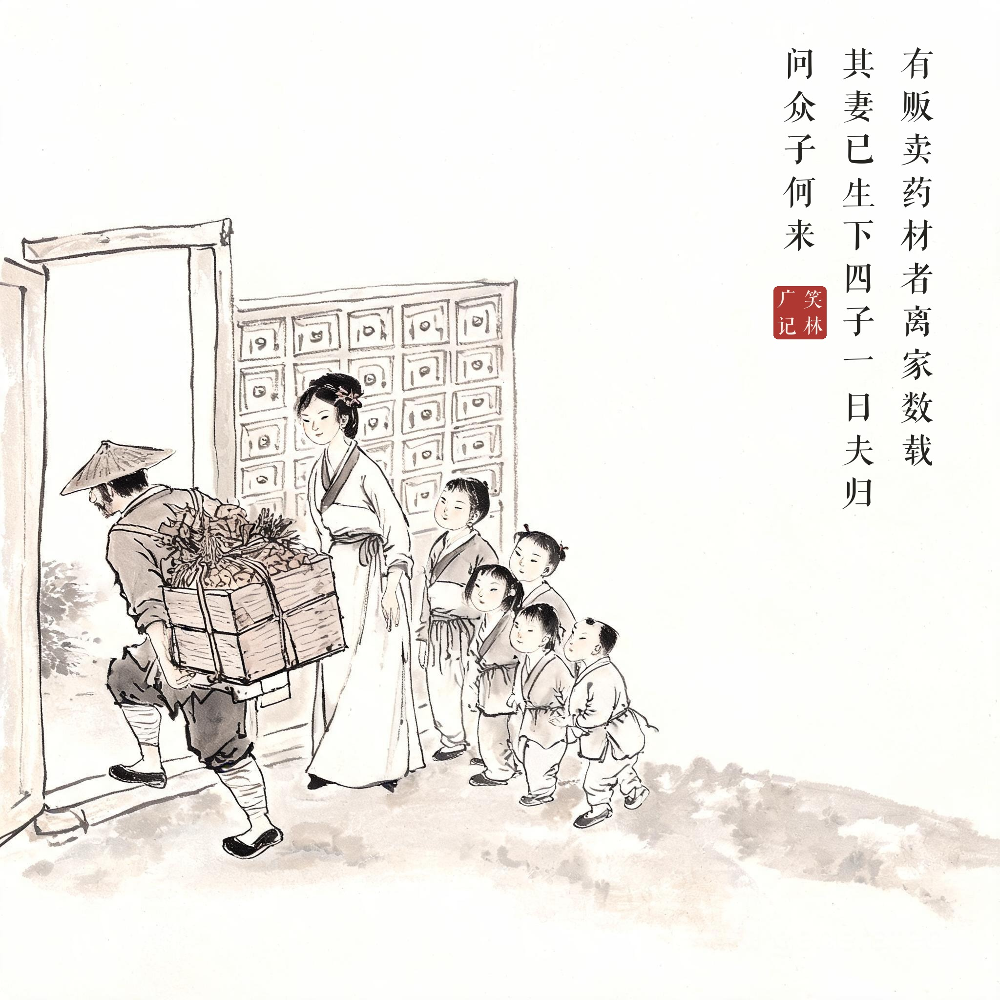
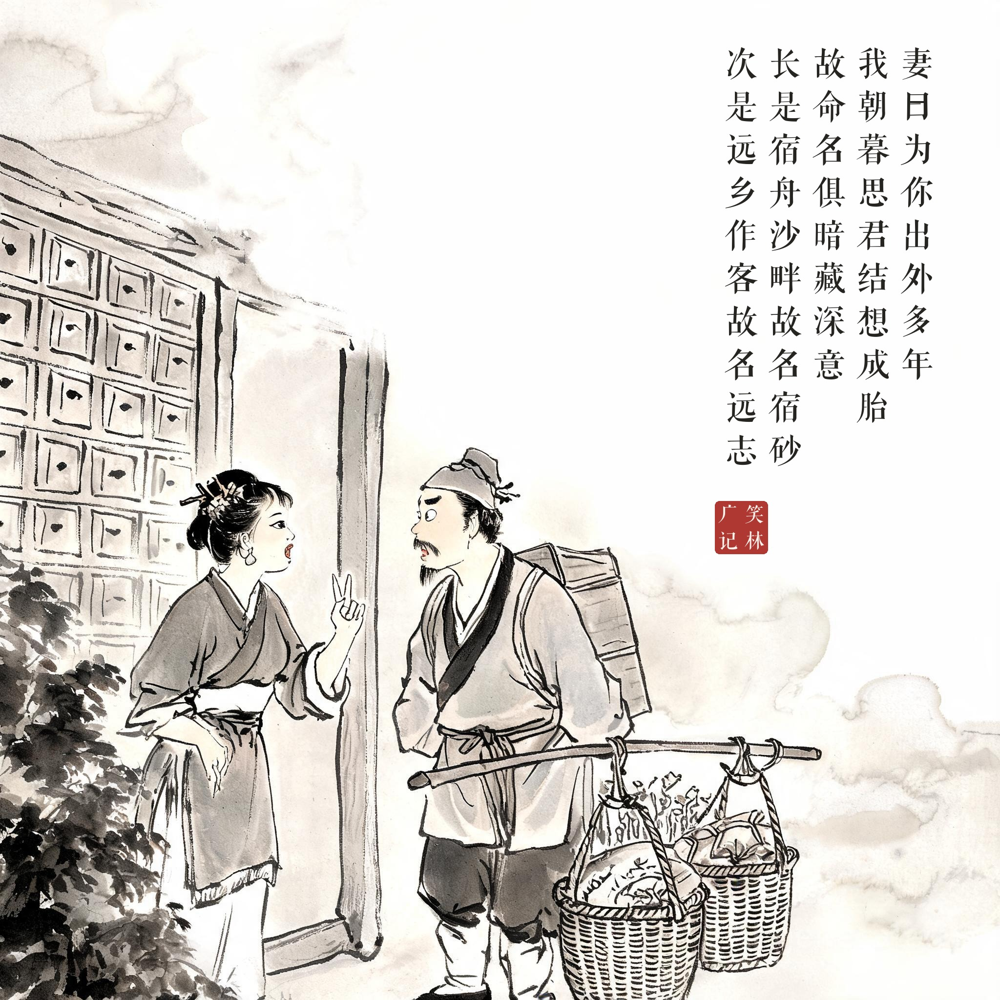
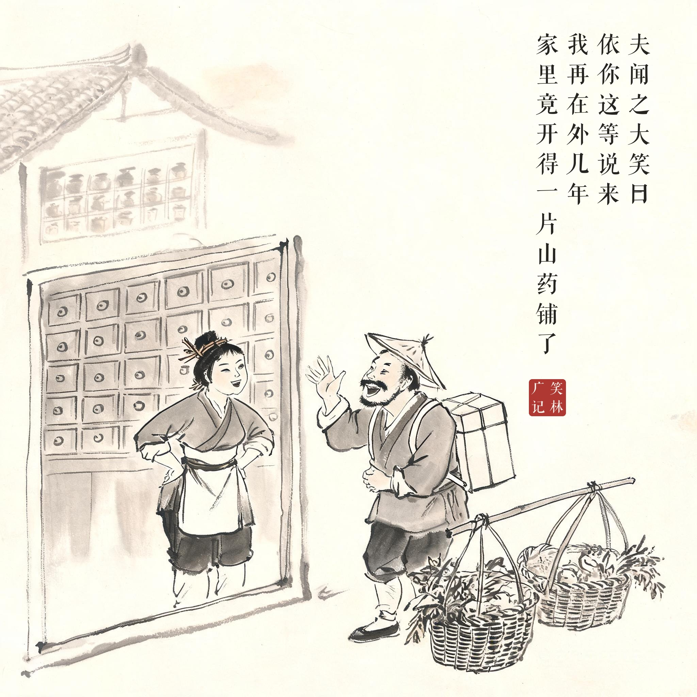

《笑林广记 · 闺风部》（[清]游戏主人纂集）
有贩卖药材者，离家数载，其妻已生下四子。一日夫归，问众子何来，妻曰："为你出外多年，我朝暮思君，结想成胎，故命名俱暗藏深意：长是你乍离家室，宿舟沙畔，故名宿砂；次是你远乡作客，我在家志念，故名远志；三是料你置货完备，合当归家，故唤当归；四是连年盼你不到，今该返回故乡，故唤茴香。"夫闻之，大笑曰："依你这等说来，我再在外几年，家里竟开得一片山药铺了。"
一位贩卖药材的商人离家多年，回来一看，妻子已生下四个儿子。他问儿子们是怎么来的，妻子说："你在外这么多年，我朝思暮想，想着想着就结想成胎了。所以名字里都有深意：老大是你刚离家住船睡沙洲，叫宿砂；老二是你远行在外我在家惦记，叫远志；老三是料你置货齐全该回家了，叫当归；老四是年年盼你盼不到，该回故乡了，叫茴香。"丈夫听完大笑："照你这么说，我再在外几年，家里都开得起一间山药铺了！"
"结想成胎"的旷世辩护词配上四个药名，最后被一句"开山药铺"戳破——古代版"嘴巴官司"名篇。